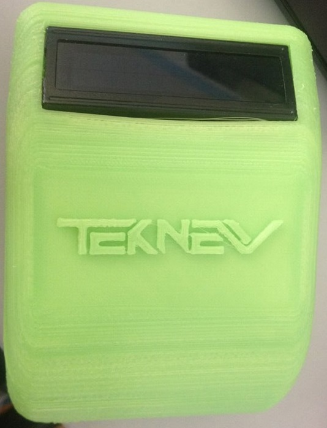
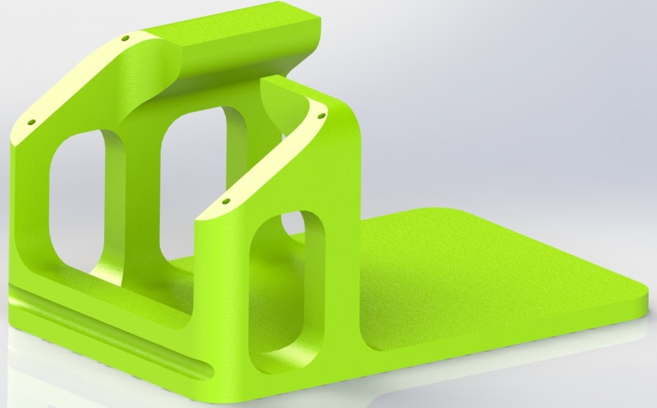
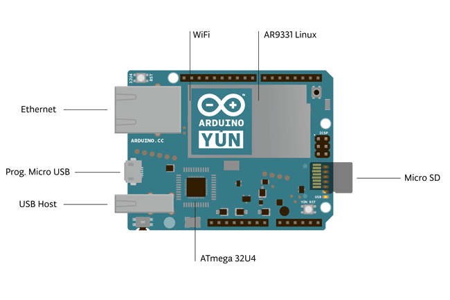
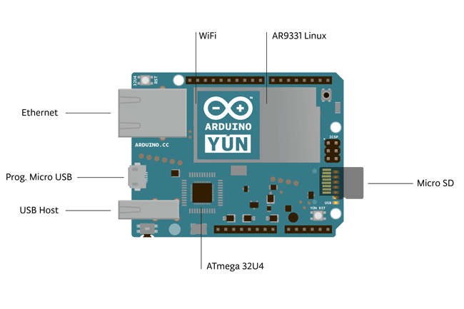
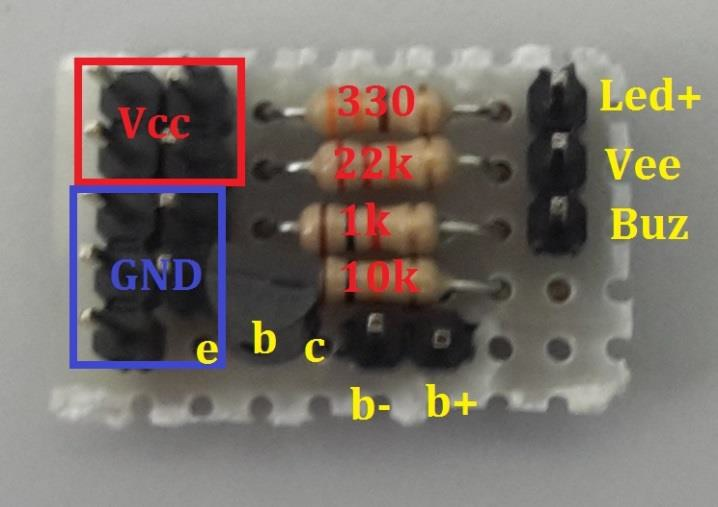

{kind=link}

Di seguito si illustra un progetto di un dispositivo per il controllo degli accessi dei dipendenti di un azienda tramite l’uso di tessere RFid. Questo dispositivo integra al sui interno un Arduino YUN, un RTC DS1307, un RFid Card Reader e un buzzer.

L’obiettivo di questo progetto è realizzare un dispositivo che sia in grado di rilevare il codice della tessera che viene passata sopra al dispositivo stesso, inviare questo codice al server dell’azienda, attendere risposta dal server, visualizzare il nome della persona per alcuni istanti sul display LCD e inviare un segnale acustico per segnalare l’accesso valido o non valido. Questo progetto non è quindi solo un puro e semplice esercizio, ma si tratta di un progetto con un’applicazione pratica e funzionale proponibile al mercato.
Il dispositivo ha le seguenti specifiche:Il contenitore del circuito è stato pensato per essere attaccato ad un muro. E’ diviso in 2 parti: una interna che tiene saldi tutti i componenti e viene attaccata al muro, ed una esterna che funge da “coperchio” che protegge l’interno e fa scorgere solo il display. L’RFid reader è messo sotto il display e attaccato al coperchio in modo tale da poter rilevare la tessera anche dall’interno. E’ presente un foro nella parte superiore sinistra per far passare all’esterno il suono del buzzer.

Con il software SolidWorks 2014 è stato progettato il contenitore ed infine ne è stato realizzato un prototipo con la stampante 3D.
L’alimentazione viene fornita da un carica batterie con uscita microUSB 5V che viene collegato alla presa di corrente della stanza e va ad alimentare l’Arduino YUN.
Arduino Yun è una scheda basata sul microcontrollore ATmega32u4 e il microprocessore Atheros AR9331, che supporta la distrubuzione Linux OpenWRT-Yun. In sostanza questa scheda è divisia in due parti: una parte Arduino che gestisce il display, l’RFid reader, il buzzer e l’RTC; ed una parte Linux che gestisce la comunicazione con il server tramite il cavo Ethernet.
 

Basata sull’integrato DS1307 della Maxim-Dallas, questa shield per Arduino consente di avere un preciso orologio di sistema, sgravando la CPU dal calcolo e dalla gestione dei dati orari e liberando spazio nella memoria di programma. L'integrato DS1307 è un contatore BCD (Binary Coded Decimal) a basso consumo, che conta secondi, minuti, ore, giorni, mesi e anni, provvisto di 56 byte di RAM statica non volatile. Può operare nelle modalità 12 o 24 ore, con indicazione delle ore antimeridiane (AM) e di quelle pomeridiane (PM). Le informazioni sull’ora e la data vengono collocate in un apposito registro e trasferite al microcontrollore di Arduino mediante l’I²C-bus.
Permette di leggere le schede RFID a 13.56MHz. Ogni tag RFid contiene un a stringa di 8 caratteri(8 byte). I tag RFid che possono essere utilizzati sono delle normali tessere aventi ognuna una stringa diversa, che vengono consegnate ai dipendenti. Questo RFid reader viene alimentato a 3.3V forniti dall’Arduino YUN e si interfaccia con esso tramite il bus SPI.
Questo display LCD 16x2 possiede 2 righe da 16 colonne, ovvero ciascuna riga contiene 16 caratteri. Visualizza costantemente la data e l’ora attuali, quando si passa il badge si visualizza per alcuni istanti il nome della persona oppure le stringhe “Badgecode non in anagrafica” o “Non connesso al server”.
Il buzzer emette un suono positivo quando il server risponde dando il nome della persona che ha timbrato il badge, un suono negativo invece quando il dispositivo non riesce a connettersi al server o quando riceve risposta che il badge non è contenuto nell’anagrafica. Il buzzer viene attivato tramite il controllo di un transistor NPN BC547 perché richiede una corrente di 50mA che un piedino digitale dell’Arduino YUN non è in grado di fornire. La frequenza per il suono acustico positivo è stata scelta di 1347Hz mentre quella per il negativo è di 200Hz.
La basetta millefori ospita 4 resistenze, 1 transistor e sbroglia la cablatura, ovvero ci sono più componenti che necessitano dei piedini di VCC e GND ma l’Arduino YUN più fornire un solo piedino di VCC e un altro paio di GND, quindi per non creare confusione con dei cavetti volanti saldati che si sdoppiano all’interno del contenitore è stato optato creare questa basetta.

E’ stato scelto per l’Arduino YUN l’IP 192.168.2.20. Quindi:
setup():
- Mostro sul display la stringa "Avvio..."
- Inizializzo la connessione con l'arduino YUN(Bridge)
- Inizializzo la connessione SPI per l'RFID
- Inizializzo l'RFID
- Inizializzo la connessione I2C(Wire) per l'RTC
- Inizializzo l'RTC
- sincronizzaOra()
loop():
- Acquisisce data/ora dall'RTC
- Se il giorno è diverso-->sincronizzaOra();
- Finche ci sono dati nella EEPROM(Timbrature salvate) ed è presente la connessione al server:
o Leggo 28 byte(lunghezza della stringa di ogni timbratura <S>AAAAMMGGHHMMSSTTTTTTTT<E>)
o Invio la stringa al server
o Resetto i 28 indirizzi appena letti(li porto a 255)
- Mostro data e ora sul display
- Se non c'è un RFID rifai il loop, altrimenti continua
- Preparo la stringa da inviare
- Se il server è connesso:
- Invio della stringa al server (<S>AAAAMMGGHHMMSSTTTTTTTT<E>)
- Ricevo una stringa di risposta dal server:
- Se la stringa è valida: <S>OK_TTTTTTTT_NOMECOGNOME_dd/MM/yyyy HH:mm<E>
- Se i primi 2 caratteri della stringa = OK
- Mostro sul display la stringa ricevuta(Nome e cognome)
- Suono acustico del Buzzer positivo per 2000ms
- Se = KO <S>KO_BADGECODE NON IN ANAGRAFICA<E>
- Mostro sul display la stringa ricevuta(Badge non in anagrafica)
- Suono acustico del Buzzer negativo per 2000ms
- Altrimenti se il serve non è connesso:
- Mostro a display la stringa "Non in rete"
- Salvo sulla EEPROM il badge appena acquisito:
- Inizio a scrivere dalla prima casella vuota(!=255)
- Scrivo la stringa di 28 caratteri
- Mostro a display la stringa "Salvato" per 2000ms
sincronizzaOra():
- Se è connesso al server:
- Invio al server la stringa "<S>GT<E>" (Get time)
- Ricevo la stringa di risposta
- Se la stringa è valida:
- Se i primi 2 caratteri della stringa = ST (Set Time):
- Scompongo la stringa
- Imposto la data e l'ora del RTC
/*
Pin:
Display: 7,6,5,4,12,11, GND,5V
RFID: 10,9,ICPS: 1,3,4,6, 3.3V
RTC: 2(SDA),3(SCL)
Buzzer: 13, GND,5V
*/
#include <LiquidCrystal.h>
#include <Wire.h>
#include "RTClib.h"
#include <YunClient.h>
#include <SPI.h>
#include <MFRC522.h>
//#include <FileIO.h>
#include <EEPROM.h>
#define SS_PIN 10 // PIN Sda RFID RC522
#define RST_PIN 9 // PIN Reset RFID RC522
MFRC522 mfrc522(SS_PIN, RST_PIN); // Create MFRC522 instance.
IPAddress ip(192,168,1,100);
int porta=10010;
YunClient client;
RTC_DS1307 RTC;
int giornoSalvato=0;
//int nCarattere=0;
int indirizzo=0;
LiquidCrystal lcd(7, 6, 5, 4, 12, 11); // Pin utilizzati dal LCD
void setup() {
lcd.begin(16, 2);
lcd.print("Avvio...");
Bridge.begin();
//FileSystem.begin();
//Serial.begin(9600);
SPI.begin(); // Init SPI bus
mfrc522.PCD_Init(); // Init MFRC522 card
Wire.begin();
RTC.begin();
RTC.sqw(1); //0 Led off - 1 Freq 1Hz - 2 Freq 4096kHz - 3 Freq 8192kHz - 4 Freq 32768kHz
sincronizzaOra();
//delay(25000);
}
void sincronizzaOra(){
DateTime now = RTC.now();
if (client.connect(ip, porta)) /*Serial.println("Connesso")*/;
//else Serial.println("Non connesso");
if (client.connected()) {
client.print("<S>GT<E>"); // Get Time
//Serial.print("Stringa inviata --> ");
//Serial.println("<S>GT<E>");
while(!client.available()){}
if(client.available()){
String valRicevuto=client.readString();
//Serial.print("Stringa ricevuta --> ");
//Serial.println(valRicevuto);
if(valRicevuto.startsWith("<S>")&&valRicevuto.endsWith("<E>")){
if(valRicevuto.substring(3,5)=="ST"){
int anno=valRicevuto.substring(valRicevuto.indexOf("_")+1,valRicevuto.indexOf("_")+5).toInt();
int mese=valRicevuto.substring(valRicevuto.indexOf("_")+5,valRicevuto.indexOf("_")+7).toInt();
int giorno=valRicevuto.substring(valRicevuto.indexOf("_")+7,valRicevuto.indexOf("_")+9).toInt();
int ora=valRicevuto.substring(valRicevuto.indexOf("_")+9,valRicevuto.indexOf("_")+11).toInt();
int minuti=valRicevuto.substring(valRicevuto.indexOf("_")+11,valRicevuto.indexOf("_")+13).toInt();
int secondi=valRicevuto.substring(valRicevuto.indexOf("_")+13,valRicevuto.indexOf("_")+15).toInt();
RTC.adjust(DateTime((uint16_t)anno, (uint8_t)mese, (uint8_t)giorno, (uint8_t)ora, (uint8_t)minuti,(uint8_t)secondi));
giornoSalvato=(int)now.day();
//Serial.print("ORA SINCRONIZZATA ");
}
}
}
client.stop();
}
}
void loop() {
DateTime now = RTC.now();
// Sincronizzazione ora:
if(giornoSalvato!=(int)now.day())sincronizzaOra();
// Invio dati salvati su SD:
/*File dataFile = FileSystem.open("/mnt/sd/datalog.txt");
if(dataFile){
String stringaSD="";
while(dataFile.available()){
if (client.connect(ip, porta)){
if (client.connected()) {
dataFile.seek(nCarattere);
char carattereLetto=(char)dataFile.read();
if(carattereLetto=='\n'){
client.print(stringaSD);
stringaSD="";
}
else stringaSD+=carattereLetto;
nCarattere++;
}
}
}
}
dataFile.close();*/
//FileSystem.remove("/mnt/sd/datalog.txt");
//Process p;
//p.runShellCommand("rm /mnt/sd/datalog.txt");
//nCarattere=0;
String stringaLetta="";
indirizzo=0;
while(EEPROM.read(indirizzo)!=255 && client.connect(ip, porta) && client.connected()){ //Finche ci sono dati nella eeprom
//lcd.clear();
for(int i=0;i<28;i++){ // Leggo la stringa dalla eeprom
stringaLetta+=(char)EEPROM.read(indirizzo);
//lcd.setCursor(0, 0); // Colonna 0, riga 0
//lcd.print((char)EEPROM.read(indirizzo));
//lcd.setCursor(0, 1);
//lcd.print(indirizzo);
//delay(500);
indirizzo++;
}
client.print(stringaLetta); // Invio la stringa
//lcd.setCursor(0, 1);
//lcd.print("Inviata");
//delay(5000);
stringaLetta=""; // Azzero la stringa per il prossimo badge
indirizzo-=28;
for(int i=0;i<28;i++){ // Resetto gli indirizzi appena letti
EEPROM.write(indirizzo,(byte)255);
//lcd.setCursor(0, 0);
//lcd.print(indirizzo);
//delay(100);
indirizzo++;
}
//lcd.setCursor(0, 1);
//lcd.print(indirizzo);
//lcd.print("Azzerati");
//delay(500);
client.stop();
}
client.stop();
// Mostro data e ora sul LCD:
String data="";
if(now.day()<10) data+="0";
data+=now.day();
data+="-";
if(now.month()<10) data+="0";
data+=now.month();
data+="-";
data+=now.year();
lcd.setCursor(0, 0); // Colonna 0, riga 0
lcd.print(data);
String ora="";
if(now.hour()<10) ora+="0";
ora+=now.hour();
ora+=":";
if(now.minute()<10) ora+="0";
ora+=now.minute();
ora+=":";
if(now.second()<10) ora+="0";
ora+=now.second();
lcd.setCursor(0, 1); // Colonna 0, riga 1
lcd.print(ora);
// Aquisisco RFID:
unsigned long currentMillis = millis();
// Look for new cards
if ( ! mfrc522.PICC_IsNewCardPresent()) return;
// Select one of the cards
if ( ! mfrc522.PICC_ReadCardSerial()) return;
String uid_s = "";
if (!mfrc522.PICC_IsNewCardPresent() && !mfrc522.PICC_ReadCardSerial()) {
for (byte i = 0; i < mfrc522.uid.size; i++) {
String uid_a = String(mfrc522.uid.uidByte[i] < 0x10 ? "0" : "");
String uid_b = String(mfrc522.uid.uidByte[i], HEX);
uid_s = uid_a+uid_b+uid_s;
}
}
// Preparo la stringa da inviare:
String stringa="";
stringa+="<S>";
stringa+=now.year();
if(now.month()<10) stringa+="0";
stringa+=now.month();
if(now.day()<10) stringa+="0";
stringa+=now.day();
if(now.hour()<10) stringa+="0";
stringa+=now.hour();
if(now.minute()<10) stringa+="0";
stringa+=now.minute();
if(now.second()<10) stringa+="0";
stringa+=now.second();
stringa+=uid_s; // Badgecode
stringa+="<E>";
//Serial.print("RFID UID rivelato --> ");
//Serial.println(uid_s);
lcd.clear();
lcd.setCursor(0, 0); // Colonna 0, riga 0
lcd.print("Verifico...");
// Invio della stringa al server
if (client.connect(ip, porta)){
/*Serial.println("Connesso")*/;
if (client.connected()) {
client.print(stringa);
//Serial.print("Stringa inviata --> ");
//Serial.println(stringa);
while(!client.available()){}
if(client.available()){
String valRicevuto=client.readString();
//Serial.print("Stringa ricevuta --> ");
//Serial.println(valRicevuto);
if(valRicevuto.startsWith("<S>")&&valRicevuto.endsWith("<E>")){
if(valRicevuto.substring(3,5)=="OK"){
String s=valRicevuto.substring(15,valRicevuto.length()-3);
String fRow=s.substring(0,s.indexOf("_"));
String sRow=s.substring(s.indexOf("_")+1,s.length());
//Serial.println(fRow);
//Serial.println(sRow);
//Serial.println("");
// Scrivo su display:
lcd.setCursor(0, 0); // Colonna 0, riga 0
lcd.print(fRow);
lcd.setCursor(0, 1); // Colonna 0, riga 1
lcd.print(sRow);
// Suono acustico di accesso consentito:
tone(13, 1347, 1000);
delay(2000);
lcd.clear();
}
else {
String s=valRicevuto.substring(valRicevuto.indexOf("_")+1,valRicevuto.length()-3);
//Serial.println(s);
// Visualizzo su display:
lcd.setCursor(0, 0); // Colonna 0, riga 0
if(s.length()>15){
lcd.print(s.substring(0,14));
lcd.setCursor(0, 1); // Colonna 0, riga 1
lcd.print(s.substring(14,s.length()));
}
else{
lcd.print(s);
}
// Suono acustico di accesso NON consentito:
tone(13, 220, 1000);
delay(2000);
lcd.clear();
}
}
}
client.stop();
}
}
else {
//Serial.println("Non connesso");
lcd.setCursor(0, 0); // Colonna 0, riga 0
lcd.print("Non in rete");
/*File dataFile = FileSystem.open("/mnt/sd/datalog.txt", FILE_APPEND);
if (dataFile) {
dataFile.print(stringa);
dataFile.close();
}*/
//else Serial.println("error opening datalog.txt");
indirizzo=0;
while(EEPROM.read(indirizzo)!=255)indirizzo++; // Inizia a scrivere dalla prima casella vuota
for(int i=0;i<28;i++){
EEPROM.write(indirizzo, (byte)stringa[i]);
//lcd.print((int)indirizzo);
//lcd.print(" ");
//lcd.print(i);
//delay(100);
indirizzo++;
//lcd.setCursor(0, 0); // Colonna 0, riga 0
}
lcd.setCursor(0, 1); // Colonna 0, riga 0
lcd.print("Salvato");
delay(2000);
lcd.clear();
}
delay(500);
}
Il progetto è stato concluso con successo. Durante la progettazione è stato rilevata una pecca dell’Arduino YUN, ovvero che le istruzioni software per comunicare con la parte Linux sono molto pesanti, dell’ordine di 1Kbyte – 1.5Kbyte, che gravano molto sul codice, visto che la memoria di programma utilizzabile è di soli 28kByte. Infatti le timbrature non inviate al server in caso di problemi di rete vengono salvate nella memoria EEPROM dell’ Arduino YUN e non in una memoria SD perché le istruzioni necessarie sono troppo pesanti e occupano tutta la memoria di programma.